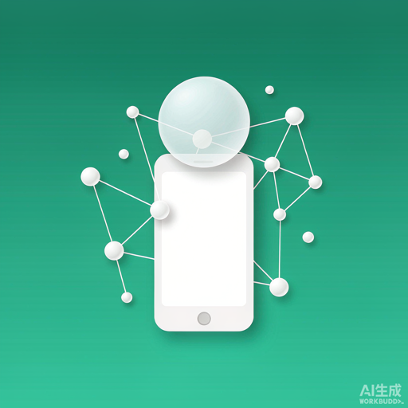
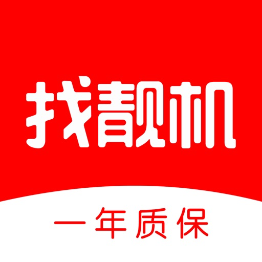
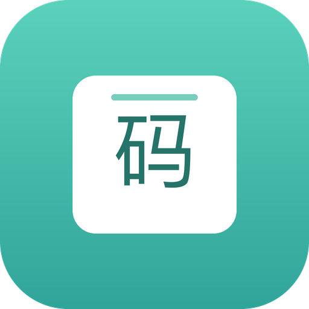

Assist 越狱源
顶栏时间Assit · 钉钉助手 · 转转 / 找靓机筛选 · 取件快码 Assit 等越狱插件分发源（rootless / roothide）
🕐
顶栏时间Assit v0.9.143
仿「电话助手」状态栏与图标模块的越狱插件：状态栏时间接管、天气/网速悬浮窗、
停靠小图标 7 个动画主题（小眼睛 / 星舰 / 猫咪 / 机器人 / 水母 / 幽灵 / 爱心）。
Dopamine / rootless，iOS 15–16。
钉钉助手 v0.9.21.1
定时自动打卡：多时间点（早 / 晚各一条，精确到秒）、单条开关与左滑删除、
桌面悬浮球一键打卡、多企业自动选择。点中按钮即冻结，进入拍照 / 备注环节后不再重复点击；
只有页面真的显示「打卡成功」才记成功。

爱回收助手 v0.0.1
给爱回收 App 挂悬浮球，按关键词直连严选开放接口翻页抓全在售商品，
自动补全系统版本 / 电池效率 / 充电次数等机况，支持按机型 / 内存 / 成色 / 电池 / 价格 / 系统版本筛选、
复制链接，以及在 App 内原生详情页直达（避开 H5 网关 WAF 导致的空白页）。
转转筛选 v0.0.39
给转转 App 挂悬浮球，长按悬浮球或点「开始抓取」自动翻页抓全搜索结果
（开始时会震两下提示），抓完按机型 / 内存 / 电池 / 系统版本 / 成色筛选，
支持价格从低到高 / 从高到低排序、列表行号、复制链接与 App 内打开详情。
手机 / 平板 / Mac 三分类，字段与筛选项互不干扰。

找靓机筛选 v0.0.18
给找靓机 App 挂悬浮球，搜索后按页把结果拉全；「点行查看本条数据」的
成色 / 功能 / 外观使用痕迹与列表完全同源（验机报告），
不会再出现「列表 95 新、点开网页 99 新」的错位。
支持筛选、价格排序、复制链接与带登录态的内置网页详情。

取件快码 Assit v2.0.0 · 无根
按原帖截图 1:1 还原的取件聚合面板：淘宝 / 拼多多 / 京东三个身份码，
加上淘宝 / 拼多多 / 京东 / 抖音 / 快手 / 得物六个查件入口，点一下直达对应 App。
桌面「取件快码」App 是主入口，不依赖注入即可使用；另有悬浮球与 iOS 设置页。
适用于 rootless 无根（Dopamine / palera1n）。
取件快码 Assit · 隐根 v2.0.0
同一份源码的 roothide 原生构建（arm64e，包内无 /var/jb 前缀），
功能与无根版完全一致：三个身份码、六个查件入口、桌面 App + 悬浮球 + 设置页。
与无根包互斥，隐根环境（Dopamine-RootHide）装这一个即可。
添加源地址（在客户端「添加源」里粘贴）：
https://cick.github.io/assist-repo/
本页按钮会自动按当前访问域名拼接链接。把整个 assist-repo/ 目录作为静态站点托管（GitHub Pages / Cloudflare Pages / 任意 Nginx）即可。